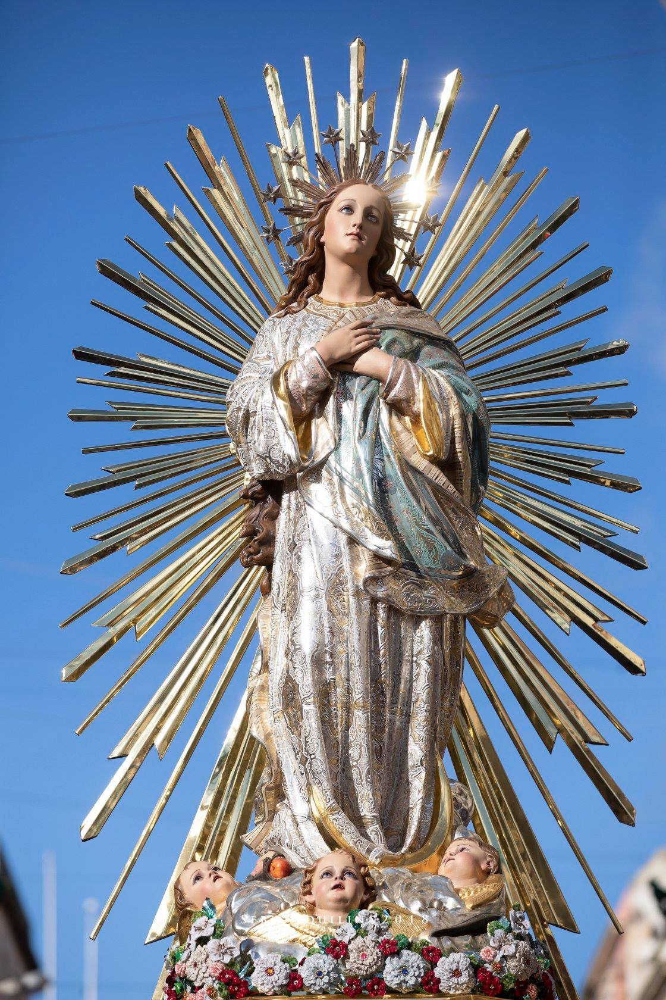

An oratory dedicated to the Immaculate Conception was established in Ħamrun by Paul Burlo on 15 May 1923. Initially set up within a private dwelling, its location was moved several times over the next two decades. After Burlo died in 1950, the priest Edgar Vella took over the oratory and made plans to construct a permanent church. With assistance from Archbishop Mikiel Gonzi and pastor Matthew Chircop from the St Cajetan parish, Vella acquired a plot of land which formerly contained railway tracks of the Malta Railway to build the new building.
The new church was designed by the architect Ġużè Damato and it was built by the stonemason Geraldu Camilleri. The first stone was laid down by Bishop Emanuel Galea on 23 March 1958, and by the end of the year the basement was completed and it was being used to celebrate Mass. The building was almost complete by the time of Vella's death in 1962, but works halted soon afterwards due to a number of unpaid debts. The priest Joseph Mifsud Bonnici was later appointed to resume construction, and the building's finishing touches were made with the assistance of local volunteers. The church was inaugurated by Bishop Galea on 14 August 1963.
 The area in which the church was built had developed rapidly in the years following World War II. The building became a vice-parish church in 1966, and later a parish church on 1 January 1968. A parish centre and a house for the pastor were built adjacent to the church in the 1970s, and work on the church's interior was fully completed in the 1980s. It was officially consecrated by Archbishop Joseph Mercieca on 28 May 1988.